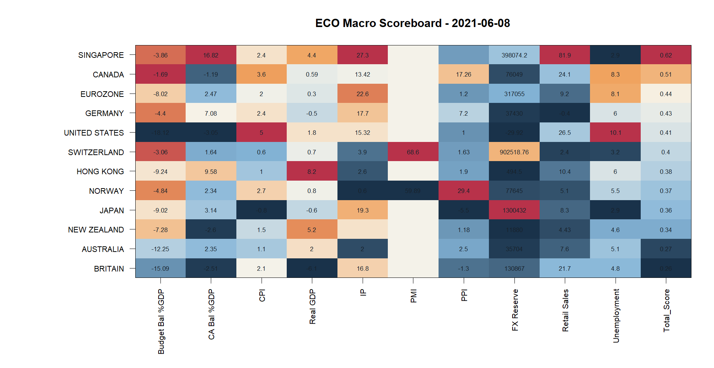
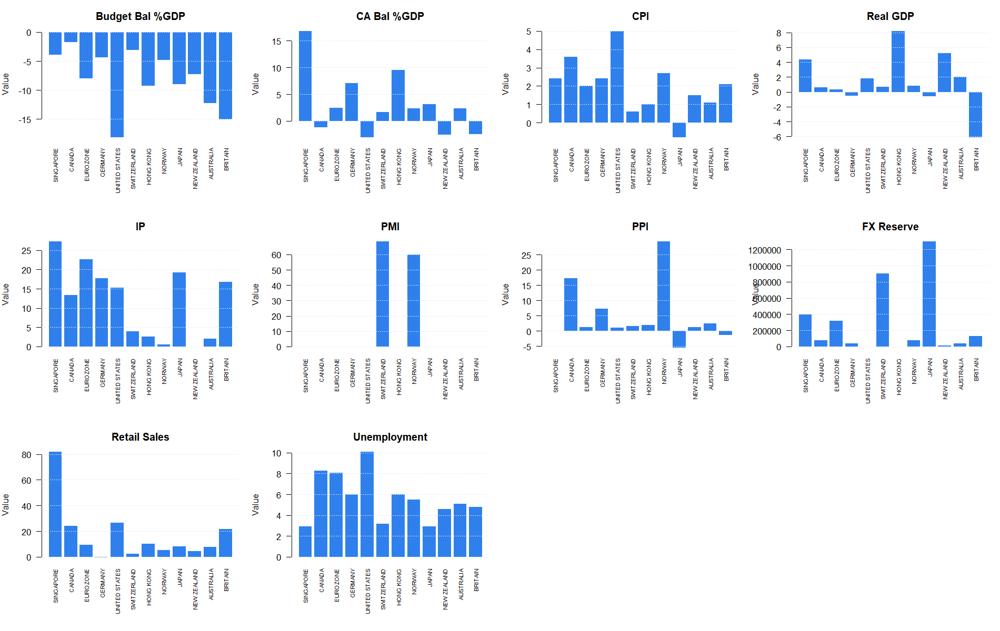
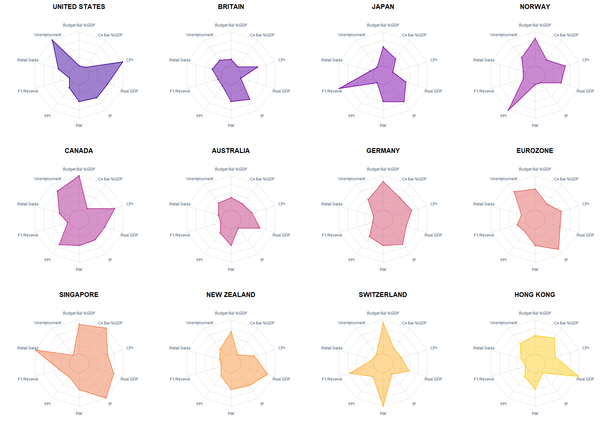

| Country | Budget Bal %GDP | CA Bal %GDP | CPI | Real GDP | IP | PMI | PPI | FX Reserve | Retail Sales | Unemployment | Total_Score |
|---|---|---|---|---|---|---|---|---|---|---|---|
| SINGAPORE | -3.86 | 16.82 | 2.4 | 4.400 | 27.30 | NA | NA | 398074.200 | 81.900 | 2.9 | 0.6164338 |
| CANADA | -1.69 | -1.19 | 3.6 | 0.593 | 13.42 | NA | 17.26 | 76049.000 | 24.100 | 8.3 | 0.5058763 |
| EUROZONE | -8.02 | 2.47 | 2.0 | 0.300 | 22.60 | NA | 1.20 | 317055.000 | 9.200 | 8.1 | 0.4421487 |
| GERMANY | -4.40 | 7.08 | 2.4 | -0.500 | 17.70 | NA | 7.20 | 37430.000 | -0.400 | 6.0 | 0.4251911 |
| UNITED STATES | -18.12 | -3.05 | 5.0 | 1.800 | 15.32 | NA | 1.00 | -29.923 | 26.500 | 10.1 | 0.4116858 |
| SWITZERLAND | -3.06 | 1.64 | 0.6 | 0.700 | 3.90 | 68.60 | 1.63 | 902518.760 | 2.400 | 3.2 | 0.3967158 |
| HONG KONG | -9.24 | 9.58 | 1.0 | 8.200 | 2.60 | NA | 1.90 | 494.500 | 10.400 | 6.0 | 0.3835578 |
| NORWAY | -4.84 | 2.34 | 2.7 | 0.800 | 0.60 | 59.89 | 29.40 | 77645.000 | 5.100 | 5.5 | 0.3653175 |
| JAPAN | -9.02 | 3.14 | -0.8 | -0.600 | 19.30 | NA | -5.50 | 1300432.000 | 8.300 | 2.9 | 0.3556091 |
| NEW ZEALAND | -7.28 | -2.60 | 1.5 | 5.200 | NA | NA | 1.18 | 11880.000 | 4.429 | 4.6 | 0.3415837 |
| AUSTRALIA | -12.25 | 2.35 | 1.1 | 2.000 | 2.00 | NA | 2.50 | 35704.000 | 7.600 | 5.1 | 0.2734959 |
| BRITAIN | -15.09 | -2.51 | 2.1 | -6.100 | 16.80 | NA | -1.30 | 130867.000 | 21.700 | 4.8 | 0.2571754 |